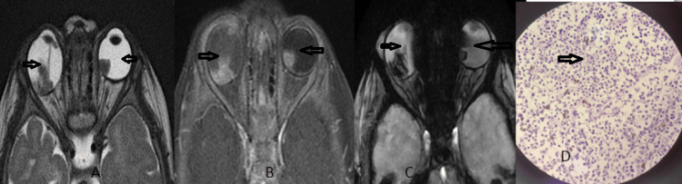
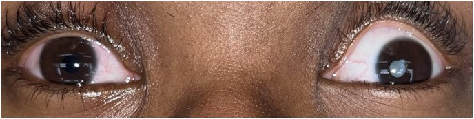
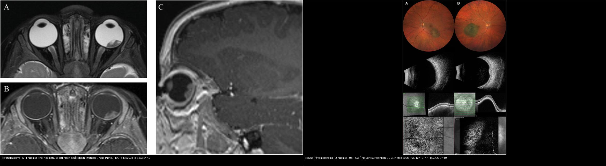
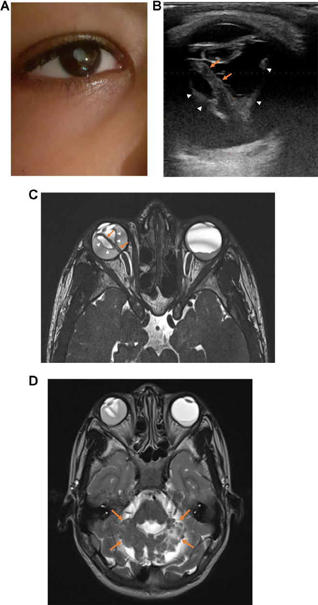
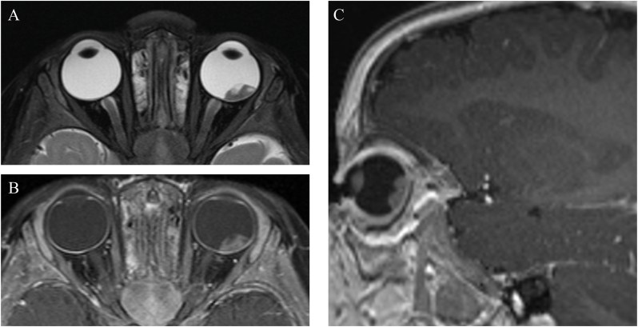
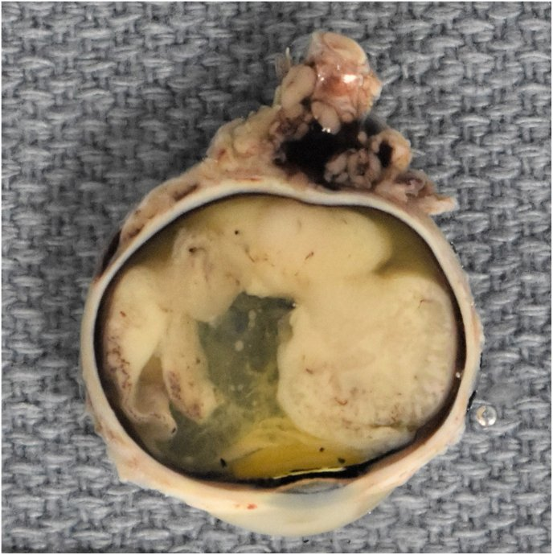
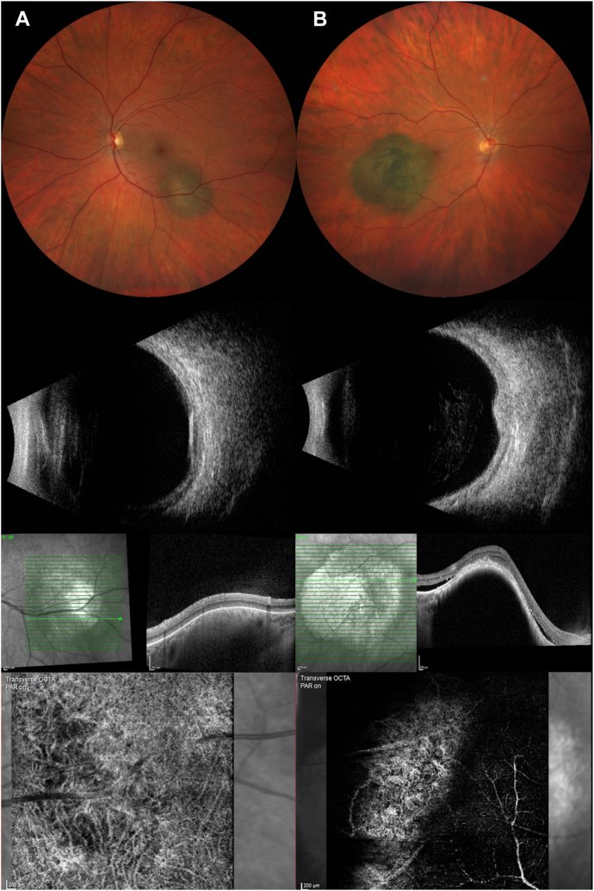

412 — U trong nhãn cầu: retinoblastoma vs melanoma / Coats / PHPV / Intraocular tumors
Tags: pattern:voi-hoa pattern:khoi-noi-nhan-cau pattern:leukocoria vung:nhan-cau score:Shields score:TFSOM protocol:MRI-hoc-mat protocol:sieu-am-B-scan
Mức chắc chắn (certainty): tổng hợp y văn + ca nguyên văn (literature synthesis + verbatim case) — tổng hợp từ y văn mở (Acad Pathol 2026; Ophthalmol Sci 2026; Radiol Case Rep 2025; Cureus 2025), có gắn hình thái ca nguyên văn.
1. Tổng quan — TUỔI + VÔI HÓA là hai trục quyết định
- Câu hỏi gốc của mọi "khối trong nhãn cầu": tuổi bệnh nhân bao nhiêu, khối có vôi hóa không? Hai trục này định hướng gần như toàn bộ chẩn đoán phân biệt (bài học lõi của dải Mắt 400).
- Retinoblastoma (RB): u nội nhãn ác tính hay gặp nhất ở trẻ; ~1/15.000–20.000 trẻ sinh sống; tuổi chẩn đoán trung vị ~18–24 tháng (thể hai bên thường < 12 tháng**). **
40% do đột biến dòng mầm RB1 (di truyền), trong đó phần lớn là hai bên**; **60% không di truyền, một bên**. **Vôi hóa thô trong khối gặp > 90% (mạnh nhất trên CT; trên MRI thấy nhậy từ tính "blooming" trên GRE/SWI). Tam giác RB (u nội nhãn hai bên + u vùng tuyến tùng/cạnh yên) gặp ở ~3% thể dòng mầm. - Melanoma hắc mạc (uveal melanoma): người lớn/trung niên–già, khối hình nấm/vòm (dome, collar-button) + bong võng mạc xuất tiết; KHÔNG vôi hóa (vôi hóa chỉ sau xạ). Đậm độ: T1 tăng/T2 giảm nhẹ do melanin; siêu âm: phản hồi âm nội khối thấp + dấu "khoang máu". Yếu tố nguy cơ di căn (gen BAP1, kích thước lớn, xâm lấn củng mạc, tuổi) — tầm soát di căn gan.
- Coats disease: trẻ nam, một bên, giãn mạch-teo mao mạch + xuất tiết lipid, KHÔNG khối đặc, KHÔNG vôi hóa (bài 457; phân độ Shields 1–5). PHPV/PFV: dây xơ trắng từ thể thủy tinh ra sau + nhãn cầu nhỏ (microphthalmia), một bên (bài 450).
- TẠI SAO tránh CT ở trẻ nghi RB: đột biến dòng mầm RB1 khiến tế bào nhạy cảm với bức xạ → tia X lặp lại làm tăng nguy cơ u thứ phát (sarcoma vùng xạ). Vì vậy MRI là chuẩn chẩn đoán, CT chỉ dùng khi thật cần (chấn thương/nghi xương).
- TẠI SAO thấy vôi hóa trên từng phương thức: vôi hóa là tinh thể calci làm tán xạ/bóng trên siêu âm (tăng echo + bóng lưng), cản tia X mạnh trên CT (sáng trắng), và làm méo từ trường cục bộ trên GRE/SWI (tối/"blooming") — do đó MRI GRE bắt được vôi hóa mà không cần tia X.

MRI hốc mắt–sọ trẻ: khối hai nhãn cầu, ngấm thuốc, blooming GRE (vôi hóa) và đối chiếu mô bệnh. Nguồn: Kumar et al., Cureus 2025, PMC12271958 Fig. 1, CC BY 4.0.2. Gamut khối trong nhãn cầu theo tuổi & cơ chế (Gamut)
- Mẫu hình cửa vào: leukocoria (mất ánh đồng tử đỏ) / lác mới / mắt đỏ đau / giảm thị lực một bên / mắt nhỏ bẩm sinh.
- Gamut theo tuổi (xếp thứ tự phải loại trừ):
- Trẻ + vôi hóa + leukocoria → retinoblastoma (loại trừ TRƯỚC mọi thứ). Khối đặc, có thể lan thần kinh thị (tới não) hoặc vỡ ra ngoài vỏ.
- Trẻ + xuất tiết/telangiectasia + KHÔNG vôi hóa → Coats (nam, một bên) hoặc Leber miliary aneurysms.
- Trẻ + dây xơ + mắt nhỏ → PHPV/PFV.
- Trẻ + vô mạch/tân mạch hai bên + tiền sử gia đình → FEVR/Norrie/IP (bài 457).
- Người lớn/già + khối nấm + bong xuất tiết → melanoma hắc mạc (không vôi hóa). Mọi tuổi + mạch máu ("cà chua") → hemangioma mạch mạc (Sturge-Weber).
- Không điển hình: u di căn (hiếm, người lớn), u lympho thứ phát, u tổ chức mỡ, nội nhãn sau chấn thương/mổ.
- Phân biệt "vôi hóa trong nhãn cầu" (định lượng): RB — vôi hóa thô, kèm khối đặc, > 90% ca; Coats/PHPV/melanoma — không vôi hóa điển hình; drusen đĩa thị — vôi hóa nhỏ, ở đầu thị, không khối (bài 433).

Leukocoria điển hình: mắt phải (bình thường) đồng tử tối, mắt trái (bệnh) phản chiếu màu trắng đục. Đây là dấu cửa vào của retinoblastoma. Nguồn: Ryan et al., Acad Pathol 2026, PMC13475203 Fig. 1, CC BY 4.0.3. Bảng so sánh phân biệt (ma trận đối chiếu)
| Thực thể (entity) | Hình ảnh điển hình | Chốt vào (rule-in) | Chốt loại (rule-out) | Gợi ý xác nhận |
|---|---|---|---|---|
| Retinoblastoma | Khối đặc + vôi hóa thô; ngấm thuốc; có thể lan thần kinh thị/não; MRI GRE blooming | Vôi hóa thô trong khối + trẻ < 5 tuổi + hai bên/gia đình | Không khối đặc + xuất tiết/telangiectasia → Coats | MRI hốc mắt–sọ (tránh CT) + xét gen RB1 + EUA; đánh giá lan TK thị = yếu tố mổ/bảo tồn |
| Melanoma hắc mạc | Khối nấm/vòm, T1 tăng/T2 giảm do melanin, siêu âm phản hồi âm thấp, không vôi hóa; bong xuất tiết | Người lớn + khối nấm + sắc tố da cam (orange pigment) + bong xuất tiết | Vôi hóa thô + trẻ → RB | Siêu âm + MRI hốc mắt; PET/CT hoặc MRI gan tìm di căn; gen BAP1 |
| Nevus hắc mạc (đối chiếu) | Nốt dẹt, không sắc tố da cam, không dịch dưới võng mạc, mạch hắc mạc bình thường | Dẹt + không orange pigment + không SRF | Dày > 2 mm + orange pigment + SRF → nghi melanoma | Siêu âm + OCT (theo dõi định kỳ) |
| Coats disease | Giãn mạch-teo mao mạch + xuất tiết lipid, một bên, không vôi hóa, không khối đặc | Bé nam + một bên + xuất tiết lipid + không bệnh hệ thống | Vôi hóa thô/khối đặc → RB | FA góc rộng + OCT (Shields 1–5); loại trừ RB trước laser |
| PHPV / PFV | Dây xơ trắng từ thể thủy tinh ra sau, nhãn cầu nhỏ, một bên | Mắt nhỏ + dây xơ bẩm sinh | Mắt thường + vôi hóa thô → RB | Siêu âm B-scan; MRI khi cần |
| Hemangioma mạch mạc | "Cà chua" (khối đỏ-cam), có thể vôi hóa sau xạ; hay kèm Sturge-Weber | Màu cà chua + dấu da/thần kinh Sturge-Weber | Không khối đặc → loại u khác | FA/ICGA + MRI sọ (tăng ngấm màng não) |

Trái: retinoblastoma — MRI hốc mắt khối đặc ngấm thuốc phía sau nhãn cầu. Phải: nevus (A) vs melanoma (B) hắc mạc — siêu âm + OCT cho thấy melanoma dày hơn, có sắc tố da cam và dịch dưới võng mạc; dấu hiệu "vôi hóa thô" là điểm chốt để nghiêng về RB. Nguồn: Ryan et al., Acad Pathol 2026 (PMC13475203) Fig. 2 CC BY 4.0 + Kurdiani et al., Ophthalmol Sci 2026 (PMC12719147) Fig. 2 CC BY 4.0; ảnh ghép letterbox, giữ nguyên bản.4. Protocol chụp + hệ phân độ/điểm chuẩn hóa
- MRI hốc mắt–sọ (chuẩn, TRÁNH CT ở trẻ nghi RB):
- Chuỗi xung: T1/T2 fat-sat + cản quang (đánh giá ngấm khối, lan củng mạc/mô mỡ), GRE/SWI (vôi hóa "blooming"), DWI (mật độ tế bào), và cuốn theo thần kinh thị lên giao thoa/não (dấu hiệu xấu → ảnh hưởng quyết định bảo tồn mắt).
- Lan thần kinh thị (optic nerve invasion) ≥ sau lá sàng / tới giao thoa là yếu tố tiên lượng nặng — mô tả rõ trên MRI.
- Siêu âm B-scan / Doppler: phát hiện vôi hóa (tăng echo + bóng lưng) khi không chụp MRI ngay; đo kích thước khối, dịch dưới võng mạc, dây xơ (PHPV).
- CT hốc mắt: chỉ khi không thể thay thế hoặc nghi chấn thương/xương; trẻ nghi RB hạn chế tối đa (tia X → u thứ phát ở thể dòng mầm).
- Phân độ & ngưỡng:
- RB theo nhóm điều trị (IIRC A–E): A u nhỏ khu trú → B/C → D → E mắt mù, khối lớn/vỡ (thường khoét mắt). Yếu tố tiên lượng: lan TK thị, xâm lấn hắc mạc/củng mạc, di căn CNS. Xét gen RB1 + tầm soát hai mắt anh chị em (thể dòng mầm ~40%).
- Coats theo Shields (1–5): 1 giãn mạch → 2 xuất tiết (2A/2B) → 3 bong xuất tiết (3A/3B) → 4 bong + glaucoma → 5 giai đoạn cuối.
- Melanoma vs nevus — tiêu chuẩn lâm sàng TFSOM ("To Find Small Ocular Melanoma"): Thickness > 2 mm · Fluid (SRF) · Symptoms · Orange pigment · Margin (bờ) — càng nhiều yếu tố → càng nghi melanoma. Trên OCT-A, melanoma giảm mật độ mạch.
- Ngưỡng định lượng minh họa (OCT-A, Kurdiani): nevus 4,9 mm × 1,3 mm, mật độ mạch 39%, tổng dài mạch 14,9 mm; melanoma 10,2 mm × 2,1 mm, có orange pigment + SRF, mật độ mạch 27%, tổng dài mạch 8,9 mm.
flowchart TD
A[Khối trong nhãn cầu / leukocoria] --> B{Tuổi}
B -->|Trẻ < 5 tuổi| C{Có vôi hóa THÔ / khối đặc?}
C -->|Có| D[RETINOBLASTOMA - MRI hoc-mat-so, tranh CT; gen RB1]
C -->|Không| E{Đặc điểm}
E -->|Xuất tiết lipid + telangiectasia, một bên| F[Bệnh COATS - Shields 1-5; loại trừ RB trước]
E -->|Dây xơ + mắt nhỏ| G[PHPV / PFV]
E -->|Vô mạch/tân mạch hai bên + gia đình| H[FEVR / Norrie / IP]
B -->|Người lớn / già| I{Khối nấm + không vôi hóa?}
I -->|Có| J[MELANOMA hắc mạc - US + MRI; tầm soát gan/BAP1]
I -->|Khối mạch 'cà chua'| K[HEMANGIOMA mạch mạc - Sturge-Weber]
5. Biến thể bình thường và cạm bẫy
- Cạm bẫy số 1 — Coats/PHPV giả retinoblastoma: cả hai đều gây leukocoria + bong võng mạc xuất tiết. Phân biệt: RB có khối đặc + vôi hóa thô; Coats/PHPV không khối đặc, không vôi hóa. Tuyệt đối không laser/đốt mắt khi chưa loại trừ RB (nguy cơ gieo rắc u). Ca minh họa PFV:
- Cạm bẫy số 2 — tránh CT ở trẻ: đột biến RB1 dòng mầm + tia X → nguy cơ u thứ phát. Ưu tiên MRI (T1 sau tiêm + GRE/SWI tìm vôi hóa + lan TK thị).
- Cạm bẫy số 3 — bỏ sót lan thần kinh thị / tam giác RB: MRI phải bao gồm thần kinh thị lên tới não và hốc mắt; bỏ qua có thể chuyển chỉ định mổ/bảo tồn sai.
- Cạm bẫy số 4 — gọi nhầm nevus là melanoma: dấu dẹt + không orange pigment + không SRF + mạch hắc mạc bình thường là nevus; chỉ nghi melanoma khi dày > 2 mm + orange pigment + SRF + có triệu chứng.
- Cạm bẫy số 5 — "khối" giả sau chấn thương/mổ, viêm: hỏi tiền sử, so hai mắt, tìm máu/tổ chức xơ thay vì khối đặc ngấm thuốc.

PFV: (A) leukocoria mắt phải; (B) siêu âm Doppler — cấu trúc tăng echo hình chữ V ở sau dịch kính, hội tụ về phía thần kinh thị (mũi tên trắng) = dây xơ của thể thủy tinh nguyên thủy tồn dư. Dấu này giúp phân biệt với retinoblastoma. Nguồn: Lahlou et al., Radiol Case Rep 2025, PMC11491904 Fig. 1, CC BY-NC-ND 4.0 (giữ nguyên bản).6. Tự lượng giá — Blind Quiz
Ca 1 — Trẻ nhỏ leukocoria một bên; ảnh màu trước:
- Hỏi: dấu hiệu cửa vào là gì? Vì sao phải loại trừ retinoblastoma TRƯỚC? Bước hình ảnh tiếp theo?
Bấm để hiện đáp án (findings + chẩn đoán)
- Dấu hiệu (findings): leukocoria mắt trái (đồng tử phản chiếu trắng đục), mắt phải bình thường; kèm lác ngoài.
- Chẩn đoán (diagnosis): nghi retinoblastoma. Loại trừ RB trước vì đây là ung thư nội nhãn — bỏ sót có thể gây di căn/tử vong. Bước tiếp: MRI hốc mắt–sọ (T1 sau tiêm + GRE/SWI + T2 fat-sat) và siêu âm B-scan; hạn chế CT ở trẻ.
- Nguồn ảnh: Ryan et al., Acad Pathol 2026, PMC13475203 Fig. 1, CC BY 4.0.
Ca 2 — Cùng bệnh nhân: MRI hốc mắt, đọc trước khi xem đáp án:

- Hỏi: khối ở đâu? Tín hiệu/ngấm thuốc? Cần tìm gì thêm trên MRI để đánh giá tiên lượng?
Bấm để hiện đáp án (findings + chẩn đoán)
- Dấu hiệu (findings): khối giảm tín hiệu T2 ở cực sau nhãn cầu trái, ngấm thuốc mạnh trên T1 sau tiêm (axial + sagittal) — khối đặc trong nhãn cầu.
- Chẩn đoán (diagnosis): retinoblastoma. Cần tìm: lan thần kinh thị lên giao thoa/não (yếu tố tiên lượng xấu, quyết định bảo tồn hay khoét mắt), u nội nhãn đối bên (thể hai bên), u vùng tuyến tùng (tam giác RB). Xét gen RB1 + khám dưới gây mê (EUA).
- Nguồn ảnh: Ryan et al., Acad Pathol 2026, PMC13475203 Fig. 2, CC BY 4.0.
Ca 3 — Cùng ca: bệnh phẩm sau khoét mắt:

- Hỏi: khối mọc từ đâu? Mô bệnh đặc trưng (rosette) của RB là gì? Khi nào chỉ định khoét mắt?
Bấm để hiện đáp án (findings + chẩn đoán)
- Dấu hiệu (findings): khối trắng ngà trong dịch kính, mọc từ võng mạc phía sau; H&E thấy rosette Flexner–Wintersteiner (đặc trưng RB).
- Chẩn đoán (diagnosis): retinoblastoma nhóm điều trị cao (IIRC D/E) → khoét mắt (enucleation); các ca nhóm thấp hơn có thể bảo tồn bằng hóa trị/tiêm nội động mạch nội nhãn. Tiên lượng liên quan xâm lấn thần kinh thị và hắc mạc.
- Nguồn ảnh: Ryan et al., Acad Pathol 2026, PMC13475203 Fig. 3, CC BY 4.0.
Ca 4 — Người lớn 62 tuổi, khối hắc mạc; siêu âm + OCT-A (A = nevus, B = ?):

- Hỏi: dấu nào phân biệt melanoma với nevus? Ngưỡng định lượng? Cần tầm soát gì?
Bấm để hiện đáp án (findings + chẩn đoán)
- Dấu hiệu (findings): A = nevus — dẹt, không orange pigment, không dịch dưới võng mạc, mạch hắc mạc bình thường (39% mật độ mạch, tổng dài 14,9 mm); B = melanoma — đường kính 10,2 mm, dày 2,1 mm, orange pigment, dịch dưới võng mạc, mật độ mạch 27%, tổng dài 8,9 mm.
- Chẩn đoán (diagnosis): melanoma hắc mạc (người lớn, khối nấm, không vôi hóa). Ngưỡng nghi melanoma (TFSOM): dày > 2 mm, SRF, triệu chứng, orange pigment, bờ tổn thương. Tầm soát di căn gan (PET/CT hoặc MRI) và gen BAP1.
- Nguồn ảnh: Kurdiani et al., Ophthalmol Sci 2026, PMC12719147 Fig. 2, CC BY 4.0.
Ca 5 — Trẻ sơ sinh leukocoria một bên; siêu âm Doppler cho cấu trúc hình chữ V:
- Hỏi: cấu trúc hình chữ V là gì? Chẩn đoán và điểm khác biệt với retinoblastoma?
Bấm để hiện đáp án (findings + chẩn đoán)
- Dấu hiệu (findings): leukocoria + siêu âm Doppler cấu trúc tăng echo hình chữ V sau dịch kính, hội tụ về phía thần kinh thị; thường kèm nhãn cầu nhỏ.
- Chẩn đoán (diagnosis): PHPV/PFV (dây xơ của thể thủy tinh nguyên thủy tồn dư). Khác RB: không khối đặc ngấm thuốc, không vôi hóa thô; mục tiêu là loại trừ RB, đánh giá nhãn cầu nhỏ và theo dõi.
- Nguồn ảnh: Lahlou et al., Radiol Case Rep 2025, PMC11491904 Fig. 1, CC BY-NC-ND 4.0 (giữ nguyên bản).
Ca 6 — Hai bệnh nhân: một trẻ (trái) và một người lớn (phải); gọi tên cơ chế mỗi bên:
- Hỏi: dấu nào nghiêng về retinoblastoma ở trẻ, dấu nào nghiêng về melanoma ở người lớn?
Bấm để hiện đáp án (findings + chẩn đoán)
- Trẻ = retinoblastoma: khối đặc + vôi hóa thô + tuổi nhỏ + leukocoria; không nhiễm sắc tố da cam; MRI GRE blooming.
- Người lớn = melanoma: khối nấm, orange pigment, SRF, siêu âm phản hồi âm thấp, không vôi hóa.
- Chốt: tuổi + vôi hóa là hai trục quyết định; ở cả hai, không chọc/đốt tổn thương khi chưa loại trừ ung thư.
- Nguồn: Ryan et al., Acad Pathol 2026 (PMC13475203) CC BY 4.0 + Kurdiani et al., Ophthalmol Sci 2026 (PMC12719147) CC BY 4.0.
Bài liên quan chéo
- 400 – Tổng quan Mắt
- 411 – Siêu âm nhãn cầu (vôi hóa siêu âm)
- 450 – Mắt nhi: ROP, Coats, PHPV
- 457 – Bệnh "giả ROP" ở trẻ đủ tháng: FEVR, Norrie, IP, Coats (Coats vs RB)
- 448 – U hắc mạc: melanoma vs nevus vs di căn
- 433 – Phù đĩa thị vs drusen đĩa (vôi hóa ở đầu thị, không khối)
- 465 – Coats plus (CTC1/CRMCC) (bệnh võng mạc giống Coats hai bên + hệ thống)
Ảnh
- Tên file:
412_<dấu hiệu>_<Modality>_PMC*-Fig*-CCBY*.jpg; nguồn + giấy phép từng ảnh trongimages/CREDITS.md. - Ảnh CC BY-NC-ND (PMC11491904) giữ nguyên bản — không ghép/crop. Ảnh ghép chỉ dùng nguồn CC BY (letterbox, giữ nguyên bản).
- AuntMinnie (Case of the Day): chỉ dẫn link, không tải.
Không dùng để chẩn đoán độc lập khi chưa có người hướng dẫn.